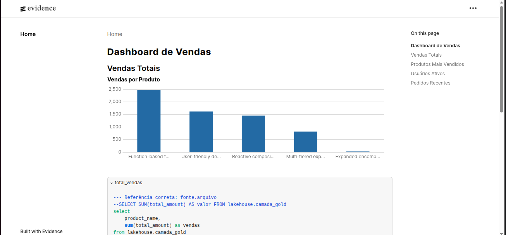
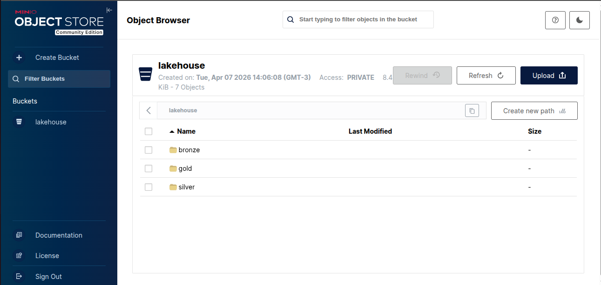

An integrated project for modern data processing, transformation, and visualization using DBT and Evidence.


The Modern Data Stack provides a structured and scalable environment for data analysis, integrating tools like DBT for data transformation and Evidence for visualization.
Clone the repository:
git clone git@github.com:LeandroCustodioP/modern-data-stack.git cd modern-data-stack
Create and activate a virtual environment:
python3 -m venv venv source venv/bin/activate
Install dependencies:
pip install -r requirements.txt
Run the data generation script:
python scripts/generator.py
Run the data ingestion or transformation scripts:
python scripts/ingestion.py
Transform data with DBT:
dbt run --project-dir dbt/ecommerce_transform
Visualize data with Evidence:
cd evidence_project npm install npm run dev
Access Evidence in your browser at: http://localhost:3001